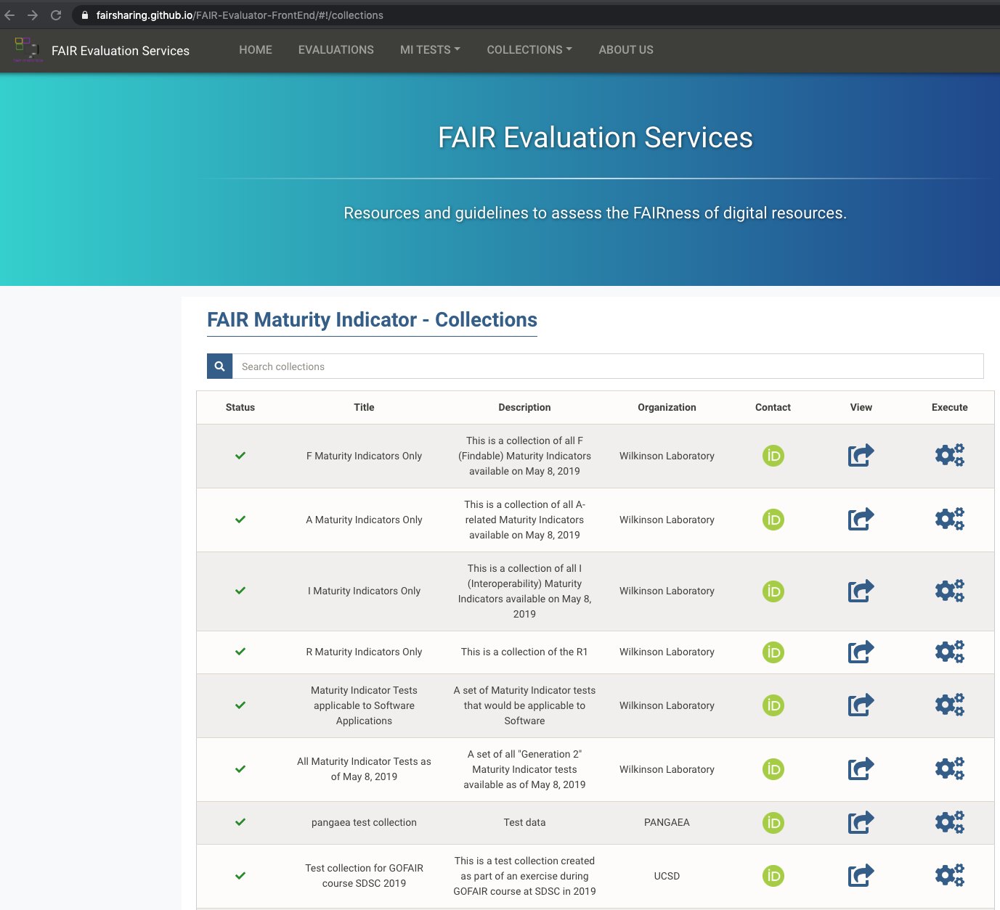
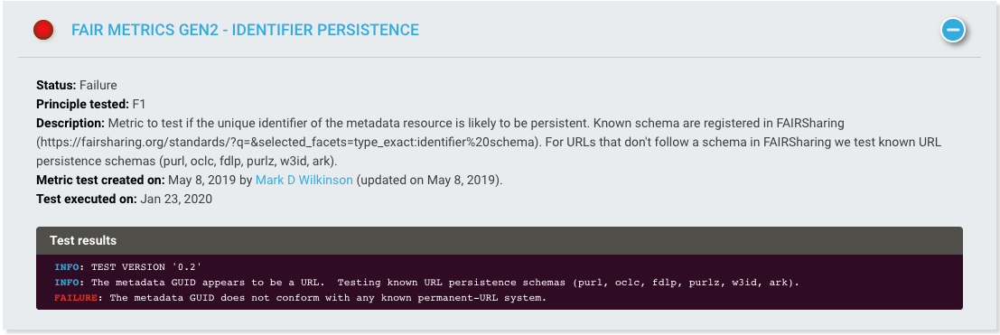

Recipe1: FAIR Assessment Recipe¶
identifier
authors
maintainers
version
0.1
license
Ingredients:¶
Identifier Schema:
Metadata Model:
topic dependent
Vocabularies and Terminologies:
topic dependent
Data Format:
Tools and Software:
5.1 resolution services:
-
5.2 FAIR assessment tools
Objectives:¶
Perform an automatic assessment of the status of a dataset with respect to the FAIR principles. Obtain a machine readable report
Step by Step Process:¶
Step2:¶
In order the run the FAIREvaluator, it is important to understand to notion of FAIR indicators (formerly referred to as FAIR metrics).
One may browse the list of currently community defined indicators from the Collections page

Step3:¶
To run an evaluation, the FAIREvaluator needs to following 5 inputs from users:
a collection of FAIR indicators, selected from the list described above.
a globally unique, persistent, resolveable identifier for the resource to be evaluated.
a title for the evaluation. Enforce a naming convention to make future searches easiers as these evaluations are saved.
a person identifier in the form of an ORCID

Step4:¶
Hit the ‘Run Evaluation’ button from ‘https://fairsharing.github.io/FAIR-Evaluator-FrontEnd/#!/collections/new/evaluate’ page

Step5:¶
Analyze the report:

Time to dig into the details and figure out the reasons why some indicators are reporting a failure:

Reference:¶
Wilkinson, M.D., Dumontier, M., Sansone, S. et al. Evaluating FAIR maturity through a scalable, automated, community-governed framework. Sci Data 6, 174 (2019). doi:10.1038/s41597-019-0184-5
Clarke et al. FAIRshake: Toolkit to Evaluate the FAIRness of Research Digital Resources, Cell Systems (2019),doi:10.1016/j.cels.2019.09.011